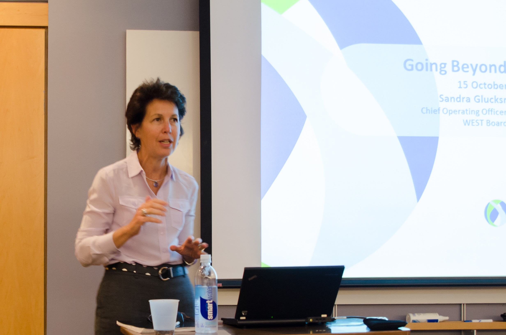
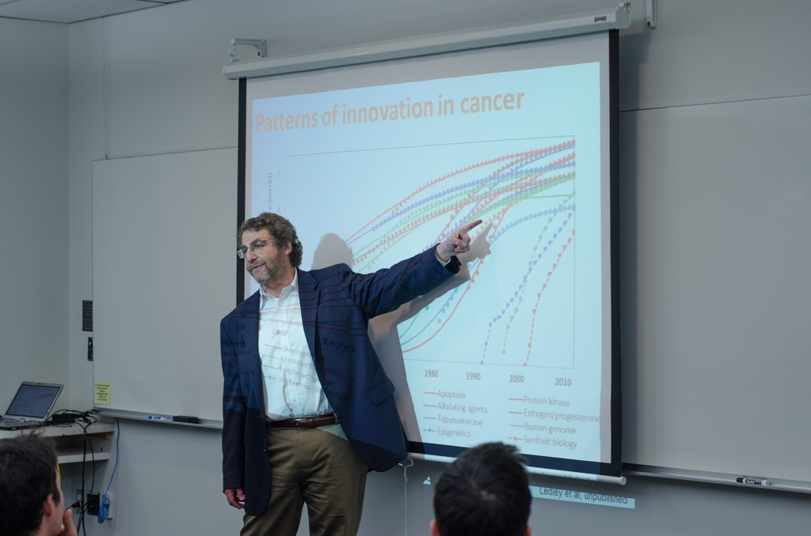
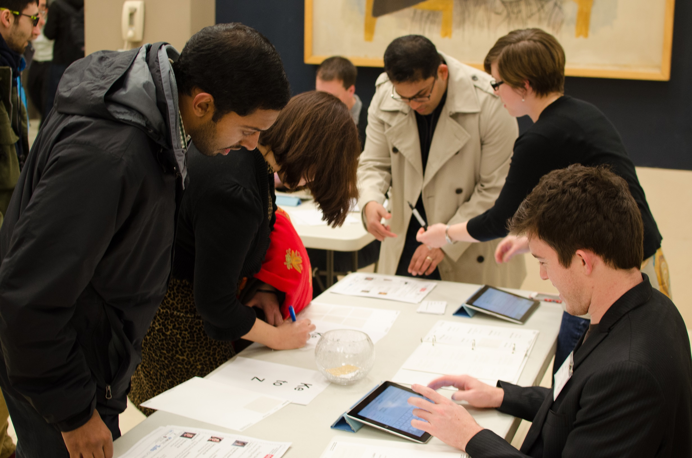
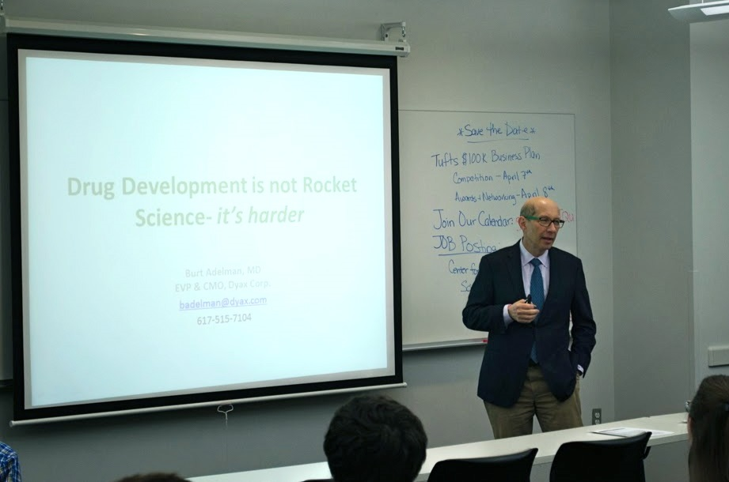
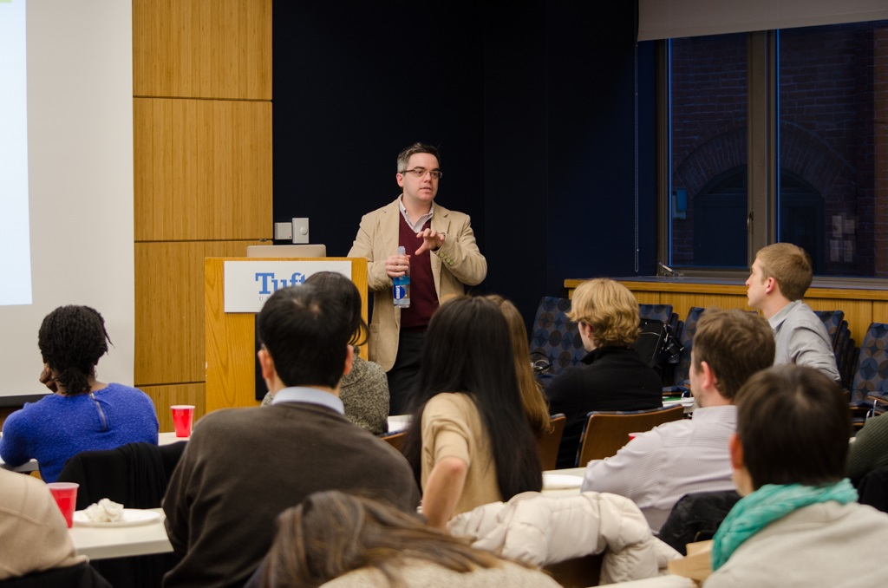
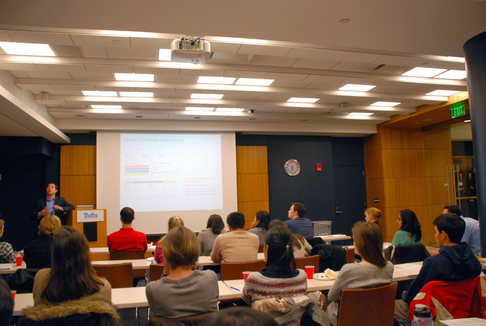

Bob Tepper, MD Partner and Co-founder Third Rock Ventures “New Company Creation in Biotechnology: Strategy and Lessons Learned”

Sandra Glucksmann, PhD Chief Operating Officer Editas Medicine “Going Beyond the Bench with your Scientific Training”

Fred Ledley, MD Director Center for Integration of Science and Industry “Making Biotechnology Work: Integrating Science and Industry”

Bench to Business: An Evening with Biotech Entrepreneurs Bonnie Fendrock, MBA Laura Hales, PhD Kathryn Kosuda, PhD Cinzia Metallo, PhD Moderated by Paulina Hill, PhD of Polaris Ventures

Burt Adelman, MD Executive Vice President and Chief Medical Officer Dyax Corp “Drug Development: It’s not rocket science, it’s harder”

Frederic Sweeney, PhD Sr. Director of Business Development T2 Biosystems “Trade your books for battle scars: A career in VC and BD without an MBA"

Matt Hawryluk, PhD Director of Business Development Foundation Medicine “Transitioning from the Bench to Business Development”
Chris Von Seggern, PhD, MPH, MBA Principal Clearview Healthcare Partners “Pharmaceutical Finance 101: Basic Principles and Applications to Strategy Consulting”
Lauren Linton, PhD Deputy Director Tufts Institute for Innovation “Career Paths: Don’t be afraid to experiment”